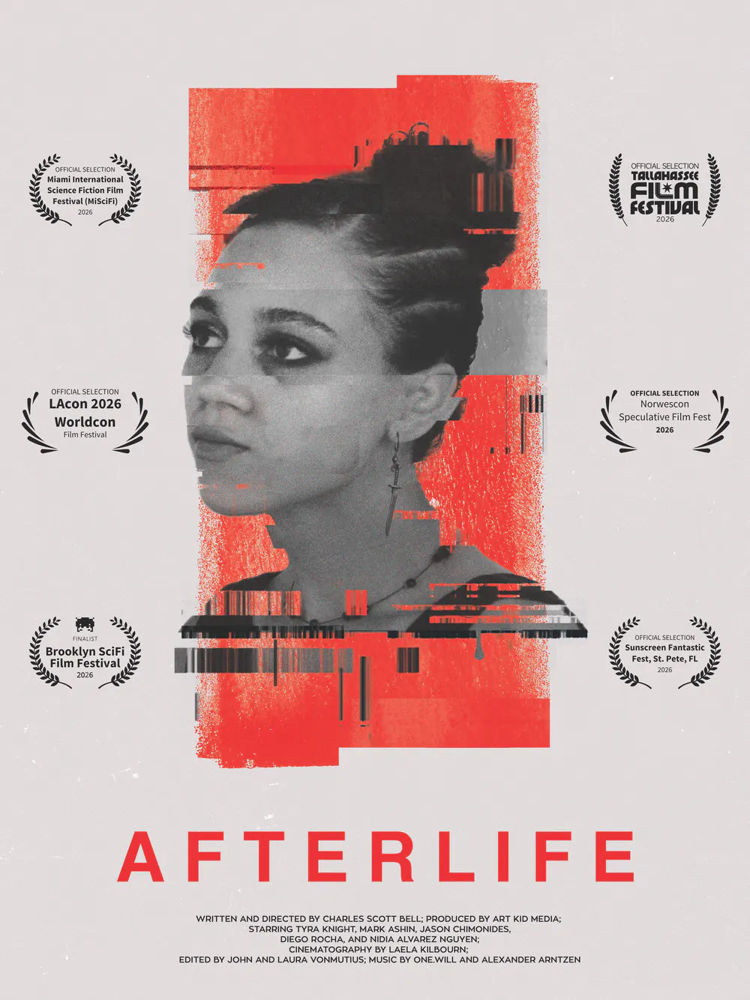
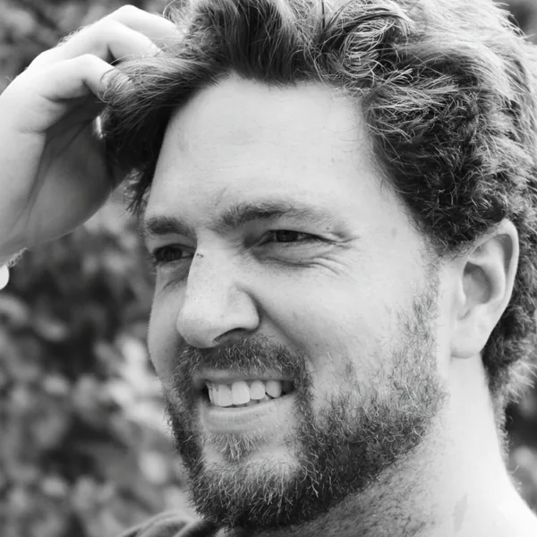
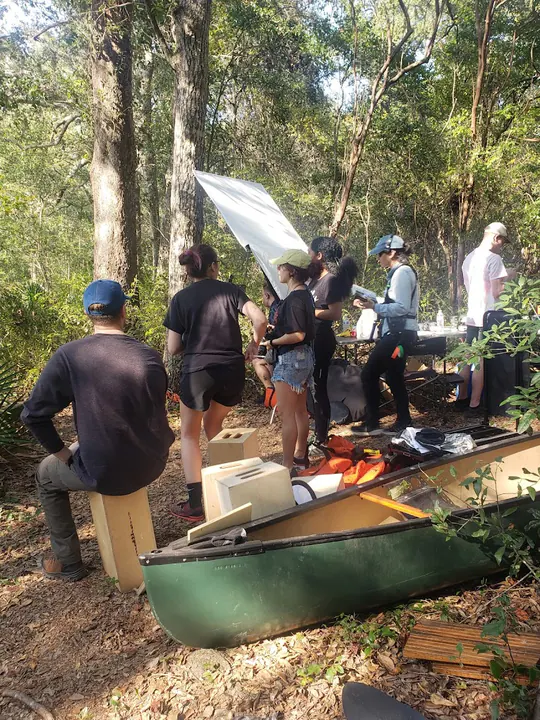
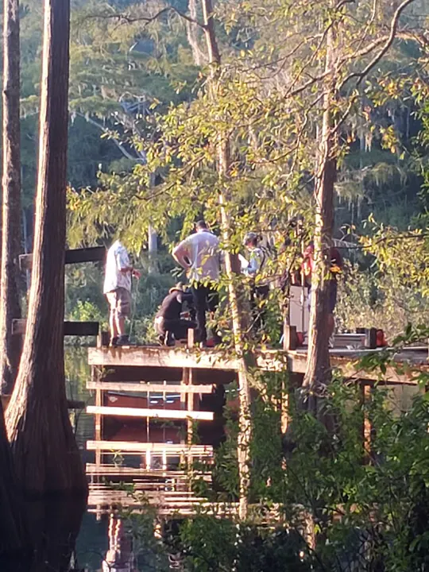
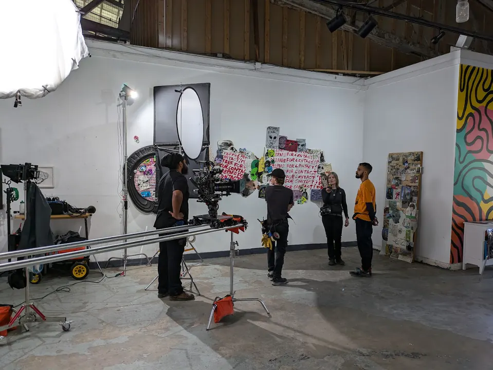
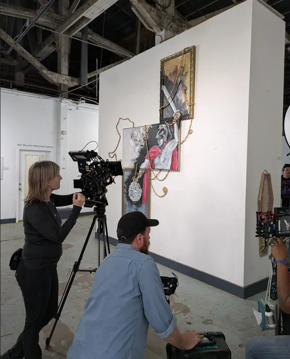
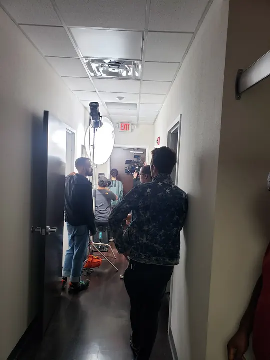

A short film written and directed by Charles Scott Bell
Afterlife
A new outpatient procedure offers an end to April Neal’s grief.
Haunted by grief in a near-future where sadness can be outsourced, April Neal considers a new outpatient procedure: an AI implant that can replicate her mind, replace it with a digital copy, and spare her loved ones the pain of loss. Set one product launch from today, Afterlife is an introspective sci-fi thriller about art, identity, and the slow erasure of the self in the age of artificial intelligence.
Next screenings
- Tallahassee Film Festival (opens in a new tab) Shorts 7: ALT/ESC. Theater #2, Challenger Learning Center, 200 S Duval St. Q&A with the filmmakers after.
- Sunscreen Fantastic Fest (opens in a new tab) Shorts Block 2. Coastal Creative, 2201 1st Ave S, St. Petersburg.
Festivals
- Official Selection, Miami International Science Fiction Film Festival 2026 (opens in a new tab) Six nominations, including Best Director
- Official Selection, Norwescon Speculative Film Fest 2026 (opens in a new tab)
- Official Selection, LAcon V Worldcon Film Festival 2026 (opens in a new tab)
- Finalist, Brooklyn SciFi Film Festival 2026 (opens in a new tab)
- Official Selection, Tallahassee Film Festival 2026 (opens in a new tab)
- Official Selection, Sunscreen Fantastic Fest 2026 (opens in a new tab)

Stills
Cinematography by Laela Kilbourn. Select a still to enlarge it or download the full-resolution original.


Director’s statement
Before my wife got pregnant, we debated the ethics of having children. New life can’t consent to being here. And no matter how sheltered, we all battle trauma, learn hard lessons, and have to come to terms, somehow, with our own mortality.
Most of us invest in careers, families, communities, art. Even our technology is designed to outsource the messy, painful parts of being human. We build tools and institutions that shield us, entertain us, and do the creative work for us. But what’s the endpoint?
Afterlife imagines one near-future possibility: an AI treatment promising a cure for depression. It copies a person’s mind, lets their original self “transcend,” and leaves behind a digital copy to live for them. The body stays, the grief goes, and of course it’s covered by insurance.
I wrote this script while my wife was carrying our son, a time when the hope of new fatherhood was equally met with the creeping fear of unspeakable loss. That tension became the story: If new tech does, one day, offer such a devil’s wager, what could drive us to take it?
The real horror isn’t some rogue algorithm. It’s how quickly we might choose numbness over experience. How willingly we might surrender autonomy for the promise of relief. And how close we already are to making choices we can’t claw back.
So why’d we have a kid? Ultimately, it was an act of hope. We agreed that the human experience is one worth sharing. The stakes don’t make us flawed, they make us what we are.
We live in a time when machines can simulate almost anything. But that isn’t experience. Creation still costs something. And that cost (emotional, physical, human) is what gives life (and art) its meaning. Afterlife is about embracing that.
Charles Scott Bell
About the director

Charles Scott Bell is a Tallahassee filmmaker whose work explores the collision between speculative science fiction and deeply personal human stories. In 2016, he founded Cat Family Records, a nonprofit label and art collective that published zines, organized festivals, and supported emerging artists across North Florida. Now through Art Kid Media, he brings that same punk-rooted, DIY ethos to filmmaking.
Credits
Written and directed by Charles Scott Bell. Produced by Art Kid Media. Starring Tyra Knight, Mark Ashin, Jason Chimonides, Diego Rocha, and Nidia Alvarez-Nguyen. Cinematography by Laela Kilbourn. Edited by John and Laura VonMutius. Music by One.Will and Alexander Arntzen.
Cast
- Tyra Knight
- April Neal
- Mark Ashin
- James Neal
- Jason Chimonides
- Dr. Yu
- Diego Rocha
- Indi
- Nidia Alvarez-Nguyen
- Lisa Neal
- Tristian Warner
- Sam Neal
- Galen Olds
- Galen Young
- Beeta Rezazadeh
- Afterlife Receptionist
- Brandie Pauling
- Afterlife (voice)
Crew
- Writer and director
- Charles Scott Bell
- Producers
- Charles Scott Bell, Cierra Alexandria Bell
- Cinematographer
- Laela Kilbourn
- Editor
- John VonMutius
- Assistant editor
- Laura Anuszkiewicz VonMutius
- Composer
- Alexander Arntzen
- Music
- One.Will
- Production design
- April Cluess, Derek Fleming
- Hair and makeup
- Joey Egiziano
- Costumes
- Hailey Eaton
- Property master
- Marq Storm
- Graphic designer
- Melissa Fleming
- Sound designer
- Hisham Billal
- Sound mixer
- Corey McHugh
- Visual effects
- Reece Mulley, Patrick Taylor
- Animator
- Muhammad Owais
- Colorist
- Patrick Taylor
- Second assistant director
- Louis Garcia
- Script supervisor
- Justin Wolf
- Casting coordinator
- Samantha Jay
- First assistant camera
- Angel Avalos
- Second assistant camera
- Krystal Alexandria, Kendall Kelly
- Digital imaging technician
- Perrone Ford
- Gaffer
- Chris Shipe
- Key grip
- Brian Jackson
- Grip
- Jody Dubose
- Production assistants
- Amos Cunningham, Lucas Gonzalez, Joey Harbour, Jada Leavy, Grayson Mullen
- Set medics
- Alexis Cejas Carbonell, Trevor Russo
- Craft services
- Lev Romano, Samantha Trenholm
Special thanks
Jake Boynton, Brie Chanai Bryant, Will Crowley, Matt Denney, Ben Fox, Cameron Gilson, Tina Horvath, Josh Johnson, Stirling Lake, Andrew McFarland, Hadley Peterson, Gabrielle Simpson, Michael Trainer, John Turner, Jennifer Ventura, and Nick Warner.
Behind the scenes





Contact
Screeners, press, and programming: scott@artkid.media
Produced by Art Kid Media in Tallahassee, Florida.